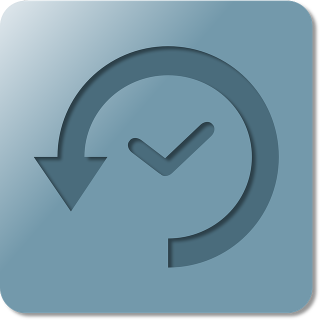

Friday 31 Mar 2023
World Back-up Day

Image Copyright
Backups should be completed all year round, but it's nice to have a designated day to help remind us to backup. If you do backup more than once a year, it's a nice time to review your strategy or test a restore. If/when you're infected by ransomware, a good backup will allow you to "tell ransomware authors to pound sand".
I am a fan of "Backup Central" podcast. It's a unique podcast by Curtis and Prasanna who discuss enterpise storage and the backup market. I would say every episode Curtis mentions his favourite rule: 3:2:1. It is entertaining and I have managed to listen to the majority of the back catalogue.
I was fortunate to receive a reply to my email I sent Curtis to ask him to to cover his personal backup strategy. Let’s hope they discuss this in a future episode.
A few lessons the teach:
- 3:2:1 rule
- Test your backup
- Keep a copy of data off site
- Backup software as a service tools
- Consider two cloud backups
Curtis also is an author of O'Reilly "Modern Data Protection" W. Curtis Preston (2011) - a book on backup and storage. I have read the eBook and it's fascinating reading.
The call-to-arms backup song (Rescue me from Pain) at the end of each episode is great too.
"Be sure to subscribe so you can restore it all".
Backlinks: Home Journal:Index Journal:2023:03